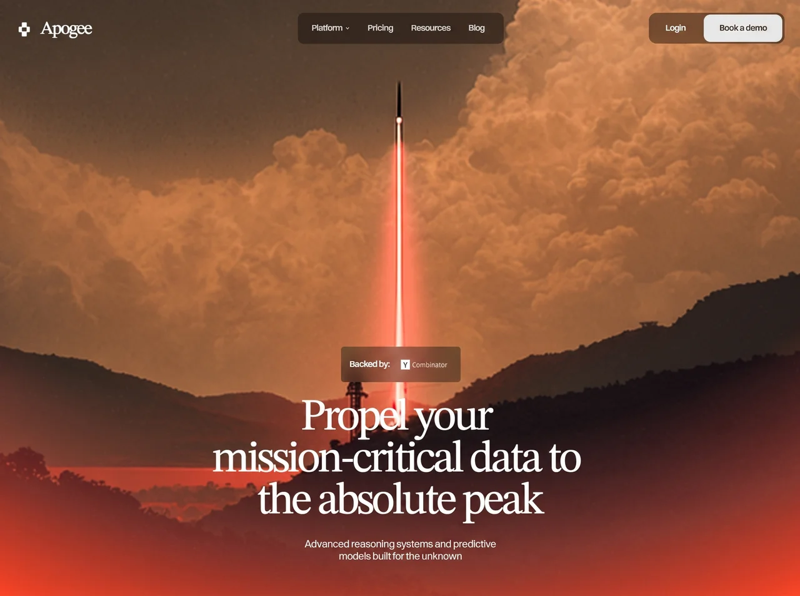

Peakline Redshift
SaaSsaasyilai-ai 公开页面
收录时间：2026-09-02正文：27,131 字符

本地预览图 · webp
完整提示词
Build a single-page, scroll-driven hero→product "camera move" landing section, exactly to the
spec below. Output three files: index.html, css/style.css, js/script.js. No frameworks, no build
step, no external JS libraries. Vanilla HTML/CSS/JS only.
=============================================================================
0. CONCEPT (this is the whole trick — read first)
=============================================================================
The hero frame and the product frame are TWO FRAMINGS OF ONE PHOTOGRAPH, not two sections.
Do NOT crossfade between two images. Build ONE pinned stage: a tall <section> whose inner
viewport is position:sticky, containing a single <img>. Scroll progress (0→1) drives one
continuous camera travel (pan + push-in) over that image, while hero copy exits and product
UI arrives. At progress 0 the stage is the hero frame exactly; at progress 1 it is the
product frame exactly.
=============================================================================
1. ASSETS — use these exact URLs, hotlinked directly
=============================================================================
Hero photograph (the single image the camera moves over):
https://d8j0ntlcm91z4.cloudfront.net/user_38xzZboKViGWJOttwIXH07lWA1P/hf_20260827_001417_948d6b75-1610-4ebb-b816-95ded6e27ce1.png
Brand mark (white glyph, transparent PNG):
https://d8j0ntlcm91z4.cloudfront.net/user_38xzZboKViGWJOttwIXH07lWA1P/hf_20260827_143409_1ebd6100-3363-446f-a8c6-10d3baa4760f.png
Y Combinator lockup (white, transparent PNG):
https://d8j0ntlcm91z4.cloudfront.net/user_38xzZboKViGWJOttwIXH07lWA1P/hf_20260827_143518_1ce3f55e-7a03-4377-97dd-7a6567bb9d25.png
Favicon (dark rounded plate, opaque PNG):
https://d8j0ntlcm91z4.cloudfront.net/user_38xzZboKViGWJOttwIXH07lWA1P/hf_20260827_143648_b2ce8bf6-11b0-49fe-b180-0c14f65d3f0b.png
Dashboard avatar ("Jane D.", 1:1):
https://d8j0ntlcm91z4.cloudfront.net/user_38xzZboKViGWJOttwIXH07lWA1P/hf_20260827_001457_3aac5e0c-eb57-4743-867b-c738490ef2a3.png
NOTE: this design uses NO video. The cinematic feel comes entirely from the CSS camera move
over the static hero PNG. If you want a video backdrop instead, replace the hero <img> with a
<video autoplay muted loop playsinline> using the SAME sizing/transform rules in section 6 —
everything else is unchanged.
=============================================================================
2. FONTS
=============================================================================
Four roles. Load via Google Fonts + Fontshare (no local files):
--font-display : 'STIX Two Text' (Google Fonts, weight 400) — headline + wordmark.
Fallback: 'Times New Roman', serif
--font-ui : 'Switzer' (Fontshare, variable 100–900, USED AT WEIGHT 450) — all UI text.
Fallback: 'Inter', 'Helvetica Neue', Arial, sans-serif
--font-label : 'General Sans' (Fontshare, 400) — the "Backed by:" label only.
Fallback: 'Switzer', Inter, Arial, sans-serif
--font-ui-mono : 'Inter' (Google Fonts, 400) — the fake browser address bar ONLY.
Weight 450 is deliberate and non-negotiable for UI text — it is a variable-font weight between
Regular and Medium. Do not round it to 400 or 500.
=============================================================================
3. DESIGN TOKENS — fluid unit system
=============================================================================
The source artboard is 1644 x 1033. Do NOT scale that artboard as one rigid block. Rebuild it
from three fluid units, each equal to exactly 1px at 1644px viewport width:
:root {
--u-ui: clamp(0.93px, calc(100vw / 1644), 1.15px);
--u-hero: clamp(0.74px, calc(100vw / 1644), 1.3px);
--u-shot: clamp(0.62px, min(calc(100vw / 1644), calc(100svh / 1033)), 1.45px);
--gutter-start: clamp(24px, 2.129vw, 56px);
--gutter-end: clamp(26px, 2.311vw, 60px);
--scene-travel: 300svh;
--color-void: #080A19;
--color-white: #FFFFFF;
--color-ink: #0A0707;
--color-button-solid: #E9E9E9;
--color-nav-surface: rgba(10, 7, 7, 0.35);
--color-actions-surface: rgba(0, 0, 0, 0.35);
--color-badge-surface: rgba(0, 0, 0, 0.3);
--color-text-muted: rgba(255, 255, 255, 0.8);
--glow: radial-gradient(
109.987% 112.486% at 50% 0%,
rgba(247, 127, 113, 0) 66.43%,
rgba(247, 127, 113, 0.5) 84.06%,
rgba(255, 80, 60, 1) 100%
);
}
--u-ui drives chrome (header/buttons/badge). --u-hero drives the hero headline block.
--u-shot drives the entire product window, and is fitted to whichever of width or height is
tighter so the window's crop stays identical at every aspect ratio.
EVERY dimension below is written as calc(N * var(--u-*)). Never hardcode px in the desktop
composition.
=============================================================================
4. PAGE STRUCTURE
=============================================================================
<header class="site-header"> position:fixed, z-index 10, top calc(29 * --u-ui)
.site-header__inner flex, space-between, padding gutters
a.brand logo img (height 38u-ui) + "Apogee" wordmark
nav.nav absolutely centred on the VIEWPORT, not between siblings
.header-actions "Login" (ghost) + "Book a demo" (solid)
button.menu-toggle two bars, hidden above 900px
.mobile-menu#mobile-menu[hidden] links + action buttons
<main id="top">
<section class="scene" id="scene"> height: calc(100svh + var(--scene-travel))
.scene__viewport position:sticky; top:0; height:100svh;
overflow:hidden; isolation:isolate;
flex column, justify-content:flex-end,
align-items:center
.scene__backdrop (inset:0, z-index:-1)
.scene__camera → .scene__photo (the ONE image)
.scene__glow
.hero__content (badge, h1, subtitle)
.platform__content (pill, h2, .shot product window)
</section>
</main>
Copy, verbatim:
Title tag: Apogee — Propel your mission-critical data to the absolute peak
Meta desc: Advanced reasoning systems and predictive models built for the unknown.
Nav: Platform (with chevron) · Pricing · Resourses · Blog
("Resourses" is misspelled in the source — keep it exactly.)
Buttons: Login · Book a demo
Badge: "Backed by:" + YC lockup
H1 (3 lines, each its own block, each with a trailing on lines 1 and 2):
"Propel your "
"mission-critical data to "
"the absolute peak"
Subtitle: Advanced reasoning systems and predictive models built for the unknown
Pill: Live Data Stream (with 4u dot)
H2: Ascend beyond limits with intelligent predictive infrastructure
=============================================================================
5. HEADER SPEC
=============================================================================
.brand gap 11.57u-ui; margin-top 4u-ui (design seats it below centre line)
.brand__mark height 38u-ui, width auto
.brand__name --font-display, 400, 30u-ui, line-height 0.95, letter-spacing -0.06em
.nav position:absolute; left:50%; top:50%; translate(-50%,-50%);
height 52u-ui; min-width 343u-ui; padding 0 24u-ui; gap 30u-ui;
border-radius 11u-ui; background --color-nav-surface
.nav__link --font-ui 450, 14u-ui, letter-spacing -0.02em, color --color-text-muted;
hover → white; transition color .18s ease
.nav__chevron inline SVG 7x4, path "M0 0L3 3L6 0", stroke currentColor, width 1
.header-actions height 52u-ui; padding 3u-ui; gap 5u-ui; radius 13u-ui;
background --color-actions-surface
.button height 46u-ui; padding 0 24u-ui; radius 11u-ui; --font-ui 450 14u-ui;
letter-spacing -0.02em
.button--ghost min-width 84u-ui; transparent; hover rgba(255,255,255,.1)
.button--solid min-width 131u-ui; bg --color-button-solid; color --color-ink; hover white
=============================================================================
6. THE CAMERA (most important section)
=============================================================================
.scene__camera position:absolute; inset:0;
transform: scale(var(--cam-z, 1)); transform-origin: 50% 50%
.scene__photo position:absolute; left:50%; top:50%;
width: max(108.699%, 172.95svh); /* preserves crop at any aspect */
height:auto; max-width:none;
transform: translate(var(--cam-x, -47.957%), var(--cam-y, -80.097%));
.scene__glow position:absolute; inset:0; background: var(--glow);
opacity: var(--glow-o, 1) /* only the hero frame carries the wash */
Camera endpoints (JS lerps between them):
from: x = -47.957%, y = -80.097% (hero framing)
to: x = -50.0%, y = -36.716% (product framing)
until: 0.86 — framing LANDS at 86% of travel, then holds
push: 0.11 — push-in that PEAKS MID-TRAVEL and resolves to 1:
--cam-z = 1 + 0.11 * sin(PI * q), where q = clamp01(p / 0.86)
=============================================================================
7. SCROLL TIMELINE (JS writes CSS custom properties on :root)
=============================================================================
Progress p = clamp01((scrollY - scene.offsetTop) / (scene.offsetHeight - innerHeight))
Easings: linear, easeOutCubic 1-(1-t)^3, easeOutQuart 1-(1-t)^4,
easeInOutCubic (t<.5 ? 4t^3 : 1-((-2t+2)^3)/2)
track(p, from, to, ease) = ease(clamp01((p - from) / (to - from)))
Windows (fractions of scene travel):
heroOut [0.297, 0.508] linear, then shaped by HERO_EXIT below
glowOut [0.550, 0.950] easeInOutCubic → --glow-o = 1 - track
platIn [0.557, 0.623] easeOutCubic → --plat-o
platText [0.563, 0.967] easeOutQuart → --plat-text-p
platShot [0.557, 0.984] easeOutCubic → --plat-shot-p
--plat-vis = p > 0.54 ? visible : hidden
THE HERO EXIT — it is NOT a fade. Three separate properties on different curves:
rise 0 → 163 design px upward, ACCELERATING: exponent 1.75 (not an ease-out)
blur 0 → 18px Gaussian, exponent 0.9 (fast then flattening)
opacity HOLDS AT 1 until exit > 0.38, then falls with exponent 1.25 (long tail —
still a legible ghost two thirds through, clears only at the very end)
So the copy is pulled up and out of focus FIRST and only disappears once already soft.
A plain fade reads as wrong. Set:
--hero-out = exit^1.75
--hero-o = (1 - clamp01((exit - 0.38) / 0.62))^1.25
--hero-filter = exit > 0 ? blur(calc(N * var(--u-hero))) : none
--hero-vis = exit >= 1 ? hidden : visible
--badge-backdrop = 'none' while exiting, else remove the property
CRITICAL COMPOSITING RULES:
- Put the LIFT on .hero__content (the wrapper) so the three blocks hold their spacing:
transform: translateY(calc(var(--hero-out,0) * -163 * var(--u-hero)))
- Put OPACITY + FILTER on each of .hero__badge, .hero__title, .hero__subtitle individually,
NOT on the wrapper. Through an ancestor filter, engines disagree about whether a descendant
with its own compositing feature (the badge's backdrop-filter, the headline's clip-path) is
drawn through the filter or beside it — applied per block there is no ancestor to disagree
about. --hero-filter must resolve to `none` at rest so the settled hero is composited with
no filter at all and stays pixel-exact.
- Drop the badge's backdrop-filter for the duration of the exit: an element both blurring and
sampling its own backdrop is the worst case for engine consistency.
- Toggle .is-moving on :root only while 0.001 < p < 0.999, and scope will-change to it.
Held on at rest, will-change softens text and image rasterisation.
SCROLL BINDING (do not map the timeline straight onto scrollY):
SETTLE = 9 exponential approach per second
MAX_RATE = 0.40 ceiling on timeline units per second
EPSILON = 0.0004 snap threshold so the ends stay exact
Per rAF frame: dt = min(0.05, elapsed);
step = (target - current) * (1 - exp(-SETTLE * dt));
clamp step to ±(MAX_RATE * dt); current += step;
if |target - current| < EPSILON then current = target
Rationale: a straight mapping collapses on a flick — one wheel gesture can jump the whole
scene in a frame, reading as no animation. The rate ceiling makes a flick play out in ~2.5s
(near the 3.05s reference) so the hero exit gets the half second it needs to read. Both steps
are frame-rate independent — identical at 60Hz and 120Hz.
Listen to scroll (passive) and resize; only run rAF while current !== target.
=============================================================================
8. INTRO ANIMATION (plays once, on load)
=============================================================================
Add class 'js' to <html> immediately. Gate initial state on .js:not(.is-open).
Each headline line is UNCOVERED, not moved: its ink grows upward from a pinned bottom edge —
a line sliding up inside a clip.
.hero__title .line display:block; clip-path: inset(-0.35em -0.6em -0.05em -0.6em)
(open at top for ascenders, closed just below the baseline)
.hero__title .line__in display:block; starts translateY(100%), opacity 0
@keyframes line-reveal { 0% {translateY(100%); opacity:0} 25% {opacity:1}
100%{translateY(0); opacity:1} }
@keyframes fade-in { to { opacity: 1 } }
.is-ready .site-header → fade-in 0.35s linear forwards
.is-ready .line__in → line-reveal 0.9s cubic-bezier(0.16,1,0.3,1) forwards
line 1 delay 0.08s · line 2 delay 0.21s · line 3 delay 0.34s
.is-ready .hero__badge, .hero__subtitle → fade-in 0.35s linear 0.95s forwards
(badge and subtitle DO NOT MOVE — their boxes are fixed from the first frame. Fade only.)
Start after document.fonts.ready, with a 1200ms timeout backstop so a slow font never blocks.
If prefers-reduced-motion OR progress() > 0.02 on load → add .is-instant (opacity 1,
transform none, animation none) and skip.
When the subtitle's animationend fires (backstop timer 1800ms), add .is-open, which sets
clip-path:none and animation:none on all of them. This MATTERS: a filled animation outranks
the element's own opacity, so the exit could not fade a block the intro left behind, and the
clip would cut the exit's blur off at the baseline. Also call it as soon as p > 0.05.
=============================================================================
9. HERO BLOCK
=============================================================================
.hero__content flex column, align center, gap 30u-hero, width 763u-hero, max-width 100%
.hero__badge padding 9.86u-ui 14.0305u-ui; radius 5u-ui; bg --color-badge-surface;
backdrop-filter: var(--badge-backdrop, blur(calc(14.6 * var(--u-ui))))
.hero__badge-row flex, align center, min-height 24u-ui, gap 8.1845u-ui
.hero__badge-label width 69u-ui (pinned); --font-label 400; 14.0305u-ui;
line-height 23.3842u-ui; letter-spacing -0.01em
.hero__badge-logo width 93.3907u-ui, height auto
.hero__title width 100%; transform: translateX(-0.03em); ← browsers add trailing
letter-space after the last glyph of a centred line and Figma does not;
this cancels it. --font-display 400; font-size 90u-hero;
line-height 0.9444; letter-spacing -0.06em; text-align center
.hero__subtitle width 423u-hero; --font-ui 450; 20u-hero; line-height 1.2;
letter-spacing -0.02em; centred; color --color-text-muted
=============================================================================
10. PRODUCT FRAME
=============================================================================
.platform__content position:absolute; left:50%; top:20.813%; width 901u-shot;
translateX(-50%); opacity var(--plat-o,1);
visibility var(--plat-vis, hidden); flex column align center
Parallax — the pill+heading travel 638px, the window travels 555px, on different curves.
That difference IS the depth of the arrival. Do not unify them.
.pill, .platform__title:
transform: translateX(calc(-8.25 * var(--u-shot)))
translateY(calc((1 - var(--plat-text-p,1)) * 638 * var(--u-shot)))
(the -8.25u offset is the design seating them left of the window's axis)
.shot:
transform: translateY(calc((1 - var(--plat-shot-p,1)) * 555 * var(--u-shot)))
.pill min-width 138u-shot; gap 10u-shot; padding 12u-shot 16u-shot;
radius 6u-shot; bg rgba(10,7,7,0.35); --font-ui 450 12u-shot
.pill__dot 4u-shot circle, white
.platform__title width 469u-shot; margin-top 39u-shot; --font-display 400 48u-shot;
line-height 0.9583; letter-spacing -0.06em; centred
PRODUCT WINDOW (.shot): width 901u-shot, height 680u-shot, margin-top 50u-shot
.shot__window::before width 900u-shot; height 100%; radius 7u-shot;
bg rgba(17,16,15,0.35); backdrop-filter blur(49.25u-shot)
.shot__toolbar 899.24 x 37.23u-shot; radius 7.025u-shot top only; bg #191C1F
traffic lights 8.4304u-shot circles at left 14.75 / top 14.05, gap 5.62u-shot
#EE6A5F #F5BD4F #61C454
sidebar icon left 69.35, top 12.91, 13.75 x 10.74u-shot
history group left 94.14u-shot, back + forward, each 23.18 x 19.67u-shot box
address block left 238.86, top 8.43, 421.52 x 19.67u-shot
shield left 6.75, top 4.11, 9.69 x 11.78u-shot
url plate left 29.51, 362.99 x 19.67u-shot, radius 4.215u-shot, bg #0C0F12
inner left 155.14, top 4.5 — lock (5.5 x 8.03u) + "apogee.ai"
in Inter 400, 9.1329u-shot, letter-spacing -0.004em
reload left 351.28, top 5.62, 7.27 x 8.86u-shot
tools group left 780.97u-shot, gap 5.62u-shot: downloads, share, plus, tabs
Recreate all toolbar glyphs as INLINE SVG in the Apple SF Symbols idiom: 1px white strokes,
rounded joins, ~50% opacity.
PRODUCT NAV (.dash-nav): left 0, top 48u-shot, 901 x 29u-shot
Hairline via two stacked gradients on the bottom edge:
linear-gradient(to right, #FFF 102u-shot, transparent 102u-shot) bottom left/100% 1px,
linear-gradient(rgba(255,255,255,.2), rgba(255,255,255,.2)) bottom left/100% 1px
Items absolutely positioned at x = 0, 89, 150, 227, 307 u-shot; 13u-shot icons;
--font-ui 450 10u-shot; opacity 0.5, active = 1.
Labels: Dashboard (active) · Data · Network · Analytics · Setting
User block at left 820u-shot: 18.69u-shot round avatar + 3.43u-shot #A6FB89 status dot at
(15.57, 1.56), then "Jane D."
TABS: left 22, top 110u-shot; --font-ui 450 40u-shot; absolute at x = 0, 142, 300u-shot;
Global (active, opacity 1) · Cluster · Insights (opacity 0.4)
CARDS — all radius 23u-shot, bg rgba(17,16,15,0.35), absolutely positioned (u-shot):
revenue left 20, top 177, 282 x 247
leads left 310, top 177, 282 x 247
sales left 600, top 177, 282 x 247
log left 21, top 433, 426 x 247
trajectory left 456, top 433, 426 x 247
.card__title left 20, top 21, --font-ui 450 14u-shot
.card__figure left 20, top 55, 32u-shot — "$14,205,890" + ".00" in rgba(255,255,255,0.2)
.card__delta left 20, top 98 — tag "+32.4%" (radius 4u, bg rgba(255,255,255,.2),
padding 5u/4u, 10u-shot) + note "vs. previous period ($10.7M)"
in rgba(255,255,255,0.56)
.stat__label 10u-shot, rgba(255,255,255,0.4)
.stat__value 14u-shot white (--sm variant 10u-shot)
Revenue card: area chart 245.5 x 69.5u-shot at left 19, top 148.
Recreate inline: 5 vertical gridlines (1px, white @ 0.1) at
x = 11.5, 66.5, 121.5, 176.5, 231.5, plus a dashed 5px tick run near the
baseline, and a white line series with a soft gradient fill beneath.
Axis row at left 19, top 223, 7u-shot, rgba(255,255,255,0.8),
labels at x = 3, 59, 114, 169, 223: 10:00 12:00 14:00 16:00 16:00
(the repeated "16:00" is in the source — keep it.)
Leads card: dot matrix 238 x 109u-shot at left 21, top 120. Grid of r=3.5 white
circles on a 21px x-pitch and 17px y-pitch, varying per-dot opacity to
suggest density. Stats: "Total Generated" 84,592 · "AI-Qualified (AQI)"
94.2% (second stat at left 128u-shot).
Sales card: bar chart 246 x 120u-shot at left 17, top 110. Six bars, width 35,
x = 0, 42, 84, 126, 168, 210; body #D9D9D9 @ 0.1 with a solid 2px white
cap on top of each; ascending-then-varied heights. Top rule at y=0.5:
full-width white @ 0.1 with two solid white segments (x 60 w 57, x 123
w 110). Stats: "Active Pipeline" $4.8M · "Win Rate Prediction" 85%
(second at left 120u-shot), both --sm.
Log card: list at left 20, top 54, width 391u-shot, gap 7u-shot, rows 20u-shot.
Tag chip bg rgba(255,255,255,0.07), 10u-shot, rgba(255,255,255,0.4).
[SYS] Initiating deep-scan protocol → right-aligned "DONE"
[AI] Model 'Apogee-V4' loaded. Latency: 0.08ms
[NET] Re-routing traffic to Global Node Alpha
Trajectory card: three stats at left 20, top 57, x = 0, 141, 275u-shot, gap 6u-shot:
Escaping Velocity 99.98% · Target ARR $50,000,000 ·
Confidence Score 99.98%
=============================================================================
11. RESPONSIVE — single breakpoint at 900px (max-width: 900px)
=============================================================================
900px is where the centred 343px nav pill and the 226px action group stop having a comfortable
gap. Above it, the desktop composition is untouched. Below it, re-compose — but KEEP the
narrative order (signal → statement → product) and keep the product UI as ONE proportional
unit. Never redesign or reflow the dashboard's internals.
:root { --u-ui: 1px;
--tablet-gutter: clamp(24px, 4vw, 36px);
--gutter-start/--gutter-end: var(--tablet-gutter);
--u-shot: calc(min(calc(100vw - 2 * var(--tablet-gutter)),
calc((100svh - 330px) * 1.325)) / 901); }
.site-header top: 20px
.nav, .header-actions display:none
.menu-toggle display:flex
.mobile-menu flex column, gap 4px, width min(360px, 100% - 2*gutter),
margin 10px gutter 0 auto, padding 14px, radius 13px,
1px rgba(255,255,255,.1) border, bg rgba(8,10,25,.78),
backdrop-filter blur(14.6px),
box-shadow 0 18px 48px rgba(0,0,0,.28),
transform-origin top right,
animation tablet-menu-in .2s ease-out both
(from opacity 0, translateY(-8px) scale(.98) → to 1/0/1)
.mobile-menu__link min-height 44px (touch target), padding 10px 12px, radius 9px, 16px
.hero__content width 100%, gap clamp(20px, 3svh, 26px)
.hero__title font-size clamp(38px, 10.2vw, 68px); keep translateX(-0.03em)
.hero__subtitle width 100%, max-width 423px, clamp(15px, 4.2vw, 20px)
.platform__content top clamp(88px, 11svh, 132px); width calc(100% - 2*gutter)
.pill, .platform__title translateX(0) — drop the -8.25u offset, keep the Y parallax
.pill min-width 138px, padding 11px 16px, radius 6px, 12px
.platform__title width min(500px, 100%), margin-top clamp(22px,3svh,30px),
font-size clamp(31px, 5.2vw, 42px)
.shot margin-top clamp(28px, 4svh, 42px)
.scene__viewport padding-inline var(--tablet-gutter),
padding-bottom clamp(32px, 6.5svh, 64px)
Mobile menu JS: toggle aria-expanded + aria-label ("Menu"/"Close menu"), set [hidden],
focus the first link on open, return focus to the toggle on Escape, close on link click,
close on outside click, and force-close on resize above 900px.
=============================================================================
12. ACCESSIBILITY & MOTION
=============================================================================
- Use svh (not vh) everywhere for viewport height — mobile URL bar correctness.
- :focus-visible → 2px solid rgba(255,255,255,.85), offset 3px, radius 4px.
- Decorative images: alt="" + aria-hidden="true". YC logo keeps alt="Y Combinator".
- nav aria-label="Primary"; product nav aria-label="Product".
- --plat-vis keeps the off-stage frame out of the a11y tree and out of hit-testing.
- @media (prefers-reduced-motion: reduce):
html { scroll-behavior: auto }
* { transition-duration: .01ms !important; animation-duration: .01ms !important }
:root { --scene-travel: 120svh }
Keep the scroll-linked camera (it is driven by the reader, not the page) but set
--cam-z to a flat 1 — drop the push-in — and let current track target with no smoothing.
=============================================================================
13. ACCEPTANCE CRITERIA
=============================================================================
1. At 1644px viewport width the composition reproduces the artboard 1:1.
2. Exactly ONE hero image element exists. No crossfade, no second copy of the photo.
3. Scrolling produces one continuous pan+zoom; the framing lands at 86% of travel and holds.
4. The hero copy rises AND blurs before it fades — at the midpoint it is visibly soft but
still readable.
5. At rest (p = 0 and p = 1) no filter and no will-change is applied to anything; text is
pixel-sharp.
6. A hard flick still plays the move over ~2.5s rather than snapping.
7. The pill/heading and the product window arrive at visibly different rates.
8. At 900px and below the nav collapses to the toggle and no horizontal scrollbar appears at
any width from 320px up.
9. Reduced motion skips the intro and the push-in but keeps scroll-linked framing.把上面的提示词完整复制到支持长文本的 AI 工具中，再按需要替换品牌名、配色与文案。提示词描述的是整页结构与动效节奏，生成后建议在真实浏览器里检查首屏加载和移动端表现。
来源与版权
该条目来自公开提示词页面，原始出处信息未随页面提供。
提示词文本与预览素材的版权归原作者或原平台所有，本站仅作索引与归档。若你是权利人并希望移除本条内容，请通过联系方式告知。